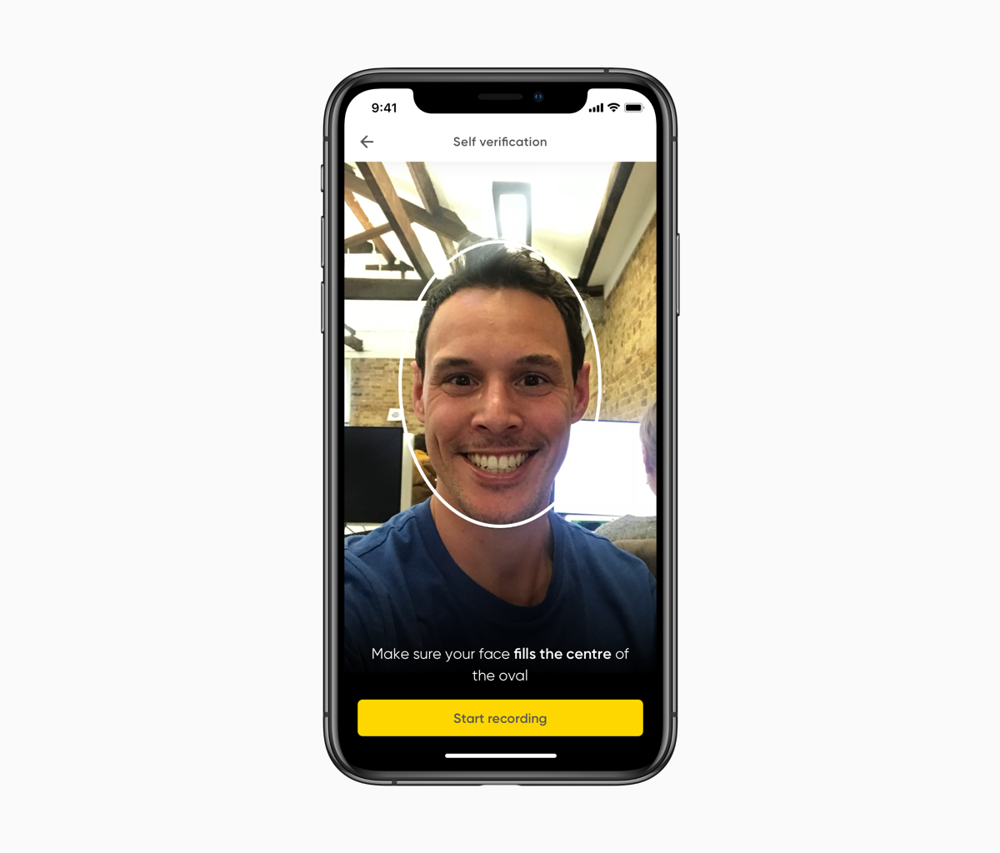
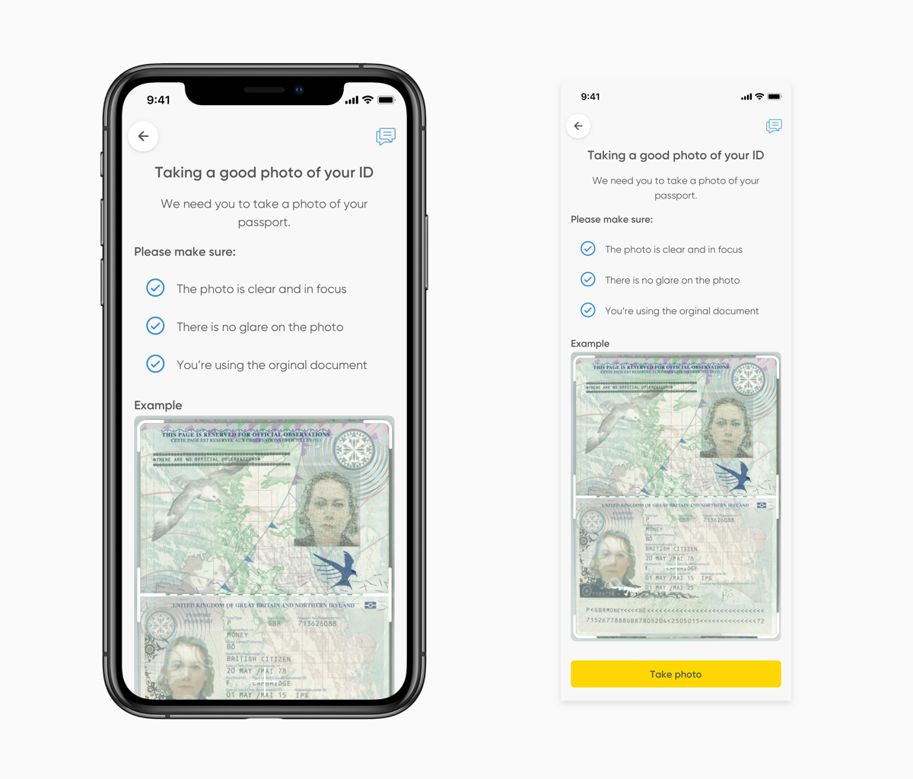
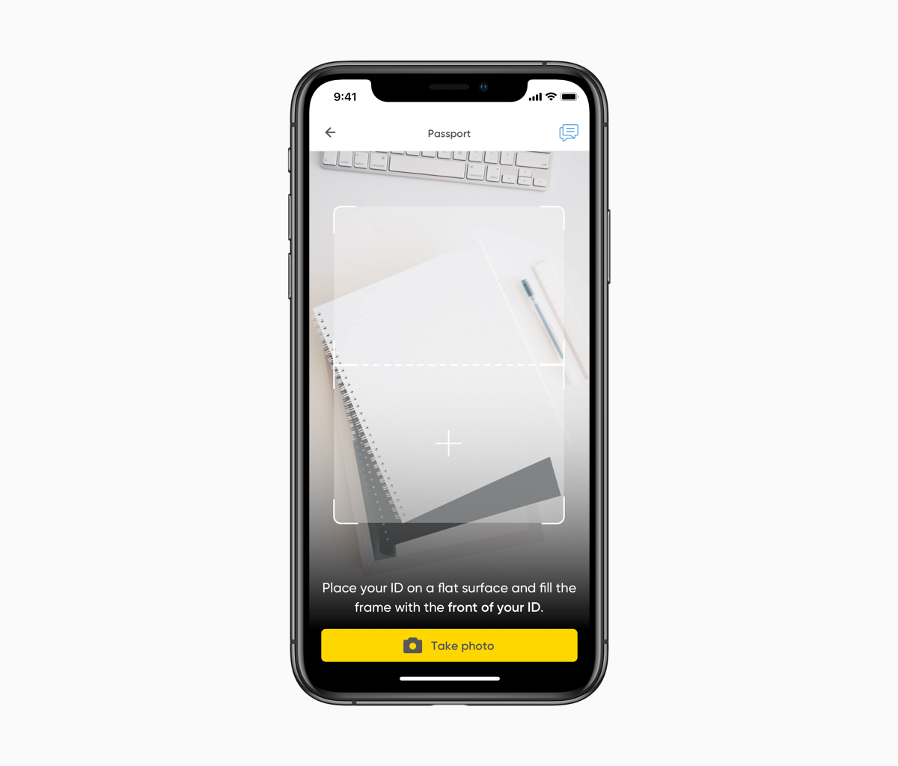
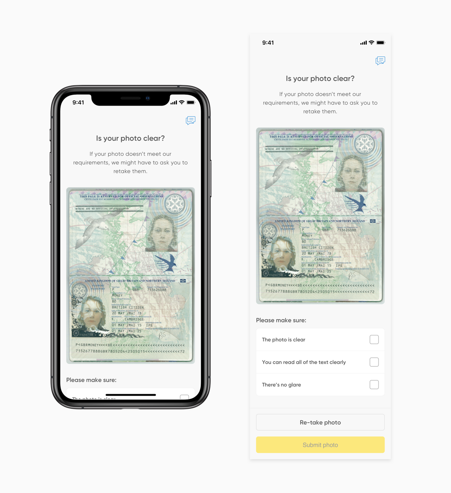
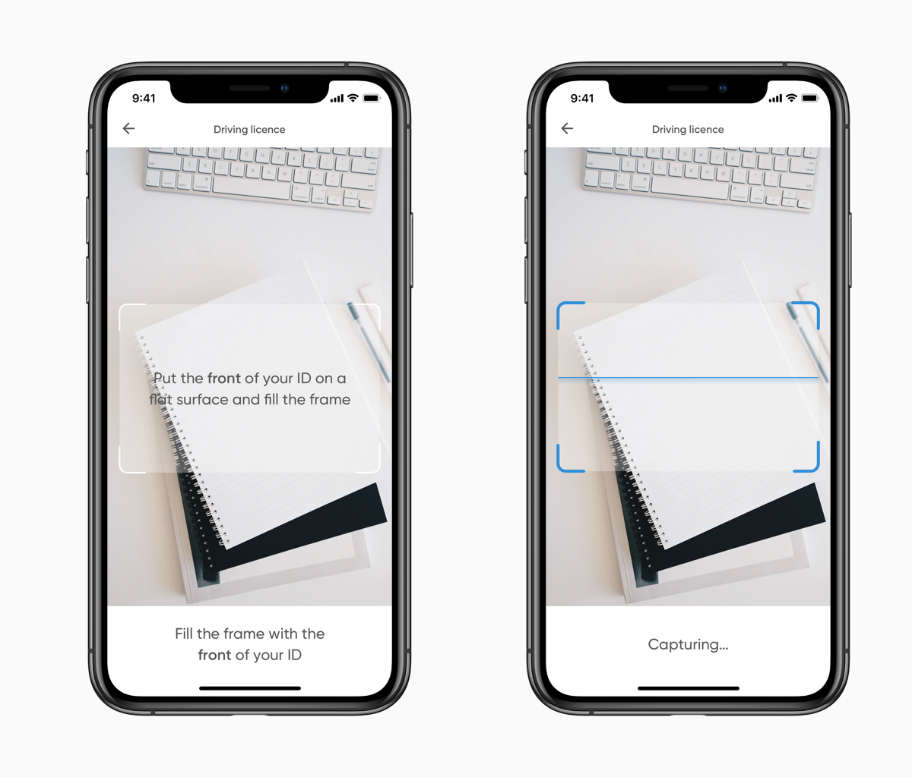

Bó — Identity verifcation
A case study about improving the success rate of identification verification
Background Information
WHAT IS BÓ?
Bó was an attempt by NatWest to create a fully digital bank in a start-up like environment. The idea was that customers would deposit their spending amount in Bó, as previous research has shown that by splitting up your spending money from everything else and then keep track of your spending, you’re likely to end up saving more. Within 5 months of launching we had managed to onboard around 12,000 customers. Unfortunately due to budget cuts caused by the coronavirus, in May 2020 the app had to wind down.
MY ROLE
I joined the team at Bó in October of 2019 as a product designer. To start with I floated between several cross-functional teams to oversee improvements in various parts of the app before its launch in late November 2019.
After the launch of the product I was then moved onto working in a cross-functional team focused on the sign-up and onboarding experiences, where I worked closely with data and user research techniques to evaluate, plan and design what we should do next. This included projects such as: refining and streamlining the current onboarding, looking at ways we can create product stickiness after a customer has signed up, account recovery flows, biometric login, reinforcing the use of Bó as an account for spending money and the process of closing an account.
Introduction
This case study looks at how I redesigned the identification process to increase the likelihood that a customer would pass the know your customer (KYC) process first time and face the minimum wait time to be approved, as well as reduce the drop-off percentage at this step.
The problem
During the Bó on-boarding identification verification was the biggest drop-off point. This is a big problem for the business as it stops people from using the product.
Not only where customers dropping off here but a large amount of customers were also getting forwarded to our support department to double check the customer was real due to poorly taken photos.
Above you can see the old KYC process that we used
Testing & identifying pain points
To identify and understand what was causing these problems we ran several different user tests (a combination of surveys and observations). These tests highlighted several pain points:
- Users would not have any form of ID on them
- Users would not want to perform this process in public
- Users felt uncomfortable providing us with an ID
- Users were incorrectly taking ID photos
- Users weren’t realising they need to take a photo of both sides of certain ID’s
- The processing time was often above 24 hours (this could be due to poorly taken photos etc.) so a customer often thought the app was frozen
- People found parts of KYC process embarrassing. These parts were also not very accessible (primarily the selfie flow you can see in the video seen in the problem section)
- Users felt like they should use their passport as this is the ID we recommended
These pain points where then mapped against a detailed analysis of our current KYC process, so we could fully understand how the current design and implementation was failing us. From here I now had the foundations to go and create a better experience.
Adding friction to guarantee user success
As designers we often think having a frictionless experience is often the best possible experience, however, from the user testing results it became immediately clear that we were making it to easy for users to take a photo without necessarily reading the instructions. This was further verified by the fact that no-one seemed to read too much of the text on the other on boarding screens.
This meant that we had to put some additional steps in place to help our users succeed in this step of the on boarding process, as any mistakes here could mean they fail their application and ultimately not access the product.
I explored several ways we could do this by looking at designs where we could do a better job at showcasing errors and not letting a user proceed to take a photo until we picked up that it would be successful. Unfortunately though due to development resources at the time we couldn’t pursue these causes.
Instead I looked at ways we could add friction into the product to help guide the users through the process and stop the two common user facing problems: poor quality photos, and not flipping over the ID.
Animation to inform people to flip their ID's over
Making the selfie flow more accessible
The user testing further also further validated one of our initial assumptions - the selfie flow was not an enjoyable experience. In the current flow we require the user to take selfies with their tongues out and their eyes closed. Users hated this process and in our onsite testing, people even asked us to leave the room during this part of the sign-up process.
There was also major accessibility concerns around taking a selfie with your eyes closed. For example: How would a user know when to close their eyes? How would a user know when the photo has been taken?
This lead us to explore different solutions using voice and video. Unfortunately a lot of these solutions where limited by the tech we received from our KYC supplier. In the end we resulted to using the flow which can be seen below - this required a user to keep their head in the frame at all times. Even as an initial solution this was much more accessible.
On the left you can see the old sign up screen. You had to swipe down on this screen to learn more, this would then reveal a series of screens like the one on the right.
The shipped solution 🚀
The first part of the redesign looked at setting user expectations so they know the requirements for taking a good photo. To try and enforce the user to take notice of this, they have to tick the boxes to enable the CTA, I also bought forward the example photo on to this screen.
The instruction screen
The second step was of the redesign was focused around the camera screens. Here I added a template for where the ID should sit, and made the camera fills he whole screen. This gives the user more information about how they should place their ID in the screen. As mentioned previously I also added in an animation and state telling the the user to flip their ID around. I also added haptic feedback and a camera shutter sound to further enforce that a photo had been taken.
The photo taking screen (this specific example shows off the passport screen)
The third step involved revamping the review screen. The new screen enforces that users review the photos and tick the checkboxes before they can proceed.
The review screen
Finally on top of these improvements we bought customer support into this flow, this meant that we could gather any feedback and issues people where having here so we could document them and see if they need addressing. This also acted as the first stage for a wider project of incorporating customer support into the sign-up process
Example of how support in onboarding works
Results & lessons learnt
Unfortunately the new designs were not live for long enough to measure the long term impact as the Bó project was cancelled by NatWest due to budget cuts. However, over the short period of time in which they were live, the new designs and success criteria have seen a large reduction in the amount of people being referred to our support team (by 67%), as well as much higher increase in people passing the KYC process first time. From this we can conclude that the initial designs were likely to have been successful over a longer period of time.
I also found it incredibly interesting how the experience with more less friction was causing more harm than good. This is something I want to think about in previous experiences that I design.
Another design element that I enjoyed playing around with was utilising sound and haptic feedback. Again this is something I want to take into account in future designs.
I would’ve liked to have tried some in-production A/B testing for different types of templates. There is lots of environmental factors at play when operating a camera therefore it was hard to gauge if we could improve the template screens further as we couldn’t conduct user tests with them while utilising a live camera.
Future iterations
As part of this design I also explored how we could evolve this system over time to reduce any form of errors here. This could have been done in two phases — phase one would be highlighting any errors when the user is trying to take a photo. Phase two would involve using AI to scan the photo automatically when the conditions are right, thus avoiding any user error completely.
On the left you can see the old sign up screen. You had to swipe down on this screen to learn more, this would then reveal a series of screens like the one on the right.
TL;DR
I redesigned the KYC process to improve the customer success rate and reduce the amount of referrals to our support team by 67%. This was done, interestingly, by adding more friction to the product to help improve the customers experience.